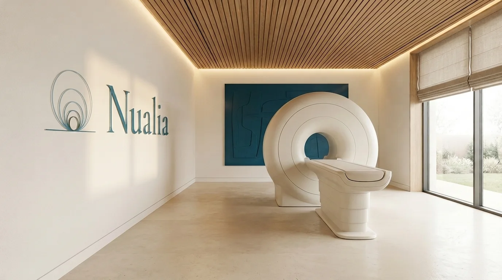
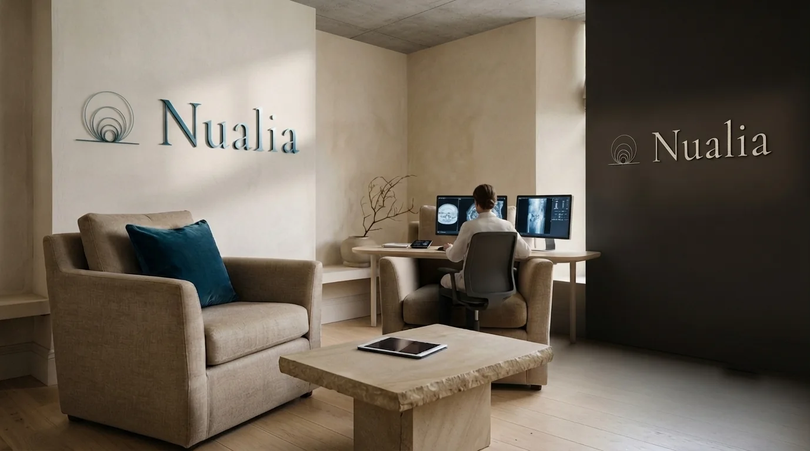

The scan
Screening is being argued about seriously, and rightly. This page is the argument, written before we open, not after. It is the argument, written out. If any of it changes your mind about coming, it has done its job.

How it works
MRI builds its picture from a strong magnetic field and radio waves. There is no ionising radiation, which is the single clearest difference from CT and the reason an MRI can reasonably be repeated every year for decades. A standard Nualia scan uses no injection and no contrast agent.
You lie still for around forty-five minutes. It is noisy, and it is dull. That is the whole of the unpleasantness.
Strengths
Structural change and aneurysms, before there is any symptom to notice.
Liver, kidneys, pancreas, spleen, adrenals, ovaries, uterus, prostate.
Degeneration, disc disease, and the mechanical causes of pain people learn to live with.
Where MRI's contrast resolution genuinely outperforms every other modality.
The large vessels, and the things that quietly change shape in them.
The one only a membership can offer: this year measured against your own previous years.
The limits
Every one of these is a reason someone might not join. We publish them anyway, because a screening service that hides its limits is not one you should trust with a yearly appointment.
No imaging test finds every cancer. MRI is weak on the lining of the colon, on most skin cancers, and on small lung nodules, which is exactly why colonoscopy, dermatology and lung CT still matter for the people they are indicated for.
Nualia is complementary to mammography, colonoscopy, cervical screening and lung CT. Anyone who tells you a whole-body MRI replaces those is selling you something.
This is the honest cost of screening. Some findings are incidental: real, visible, and harmless. Pursuing them causes anxiety and sometimes procedures. You will hear this from us before you are scanned, not after.
It means nothing was visible on the day, at the resolution used. Things can appear between two scans. This is a reason to come back, not a reason to relax.
There is no mortality-benefit evidence for whole-body screening of people at average risk, and we will not imply otherwise. What is documented is that many cancers found while still localised are a different clinical situation from the same cancers found late.
We detect and we refer. We take no fee from anyone we refer you to. That boundary is the whole reason you can trust what we tell you.
The read
Licensed tools help flag and measure. They are good at finding the same small thing in the same place two years running, which is precisely the comparison this service is built on. But no report leaves Nualia without the signature of a licensed consultant radiologist, and no result reaches you without a doctor sitting down to explain it.
If that sounds unremarkable, compare it with what is currently being sold as screening elsewhere.

Begin
A short conversation first: what screening can and cannot do, what we would look at, and whether this is right for you at all. No obligation, and no medical questions by email.